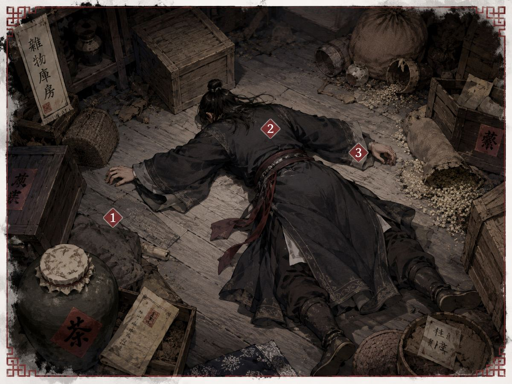

玩家在遊戲中可以發現與調查的線索整理 — 不含完整真相

| 項目 | 內容 |
|---|---|
| 化名 | 張猛 |
| 外貌 | 魁梧黑須，豪爽大漢，27歲 |
| 表面身份 | 路過的鏢客／遊俠 |
| 發現時間 | 情境二公告後（GM宣布） |
| 發現地點 | GM 布置的凶案現場 |
| 死亡原因 | 他殺（凶器待調查） |
取得方式：情景二由 GM 布置現場後玩家可直接查看，為公開線索。
取得方式：情景二由 GM 布置現場後玩家可直接查看，為公開線索。
取得方式：情景二由 GM 布置現場後玩家可直接查看，為公開線索。
降塵兄，中元節將至，可否請君至玄甲軍中，共祭宛平大戰數萬兄弟，且當前朝廷昏庸，當盡快定下再舉之策。此乃密謀，我等將化身前往盤興口天福客棧等待降塵兄。
取得方式：與線索卡一同在凶案現場展示，玩家可公開查看。此信揭示死者「張猛」的真實身份及此行目的。
兇案線索記錄與案件直接相關的物證與情報，是推理凶手身份的核心依據。
| 對象 | 取得方式 | 狀態 |
|---|---|---|
| 農叟 | 向小二詢問 | 可調查 |
| 王順 | 向小二詢問 | 可調查 |
| 金四刀 | 向小二詢問 | 可調查 |
| 賈三娘 | 向小二詢問 | 可調查 |
| 刁五兒 | 向小二詢問 | 可調查 |
| 嚴逸 | 向小二詢問 | 可調查 |
| 嚴氏 | 向小二詢問 | 可調查 |
| 王思涵 | 向小二詢問 | 可調查 |
每張證詞卡記錄小二對該角色昨晚行跡的觀察，可能涉及外觀異常、進出時間、隨身物品等線索。
本表記錄已公開確認的線索。遊戲過程中 GM 可能追加新線索。
| 線索代號 | 線索描述 | 取得方式 | 狀態 |
|---|---|---|---|
| C1–C3 | 屍體線索卡（3 張），記錄凶案現場物證與死者遺體狀況 | 情景二：凶案現場直接查看 | 公開 |
| L1 | 死者（張猛）身上的書信（1 封），揭示身份與來此目的 | 情景二：凶案現場直接查看 | 公開 |
| W1–W8 | 小二證詞（8 張），各角色昨夜行跡的服務生觀察記錄 | 調查環節：向小二詢問取得 | 可調查 |
| J01–J09 | 江湖軼聞（9 張），關於大夏、起朝、寇俠、繡衣使的公開背景資訊 | 情境一：GM 統一發放，全員公開傳閱 | 公開傳閱 |
| PI01–PI09 | 個人線索（9 張），對應各角色的可觀察特徵與隨身物品 | 情境一：GM 主持競標拍賣，起拍 10 兩，得標後個人持有 | 競標取得 |
| F01–F15 | 兇案線索（15 張），與案件直接相關的物證與情報 | 情境二：玩家依序向 GM 領取，每人 2 張，最後一人 1 張 | 待發現 |
以下為遊戲開始時，所有玩家共同知道的世界觀與背景資訊：
以下是幫助你在遊戲中整理思路的框架，但不提供答案：
| 推理方向 | 關鍵問題 |
|---|---|
| 動機 | 誰有理由殺死冷降塵？冷降塵知道了什麼？ |
| 機會 | 案發時誰有機會接觸死者？誰的不在場證明最薄弱？ |
| 凶器 | 凶器是什麼？場上誰有可能持有？ |
| 身份 | 場上每個人的真實身份是什麼？公開身份與實際行為是否吻合？ |
| 陣營 | 誰是寇俠？誰是繡衣使？陣營歸屬與動機有什麼關係？ |